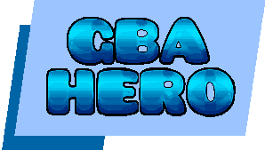
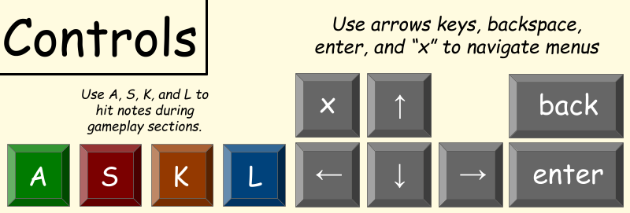

Welcome to GBA Hero!
GBA Hero is a vertical scrolling rhythm game for the Game Boy Advance taking inspiration from games like Guitar Hero and Dance Dance Revolution. This game was made for my CS 2261 class, Media Device Architecture, at Georgia Tech.
This project taught me a great deal about low level programming in C and what it means to build a game engine from scratch. A few technical details of note is that this project fully utilizes all 4 DMG channels as well as the two Digital Sound channels for the GBA. The game engine comes with a dynamic text editor, built in functions for color interpolation and palette shifting for animation, and the ability for variable speed playback for both audio and visuals. Finally, I wrote a python program that allows the developer to turn a .midi music file into a .csv file so that the game engine generates as notes in real time, no prerendering required!
Made by Jennefer Bennett